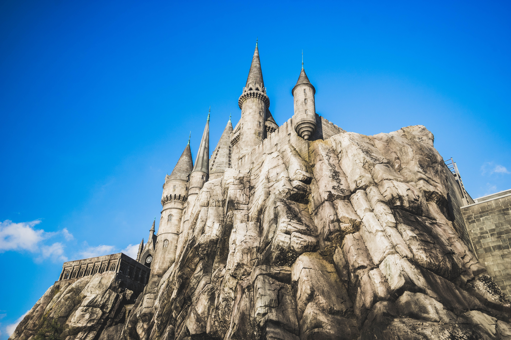

Hogwarts School of Witchcraft and Wizardry
Hogwarts School of Witchcraft and Wizardry was the British wizarding school, located in the Scottish Highlands. It accepted magical students from Great Britain and Ireland for enrolment. It was a state-owned school, funded by the Ministry of Magic. The precise location of the school could never be uncovered because it was rendered Unplottable. To Muggles, the school appeared to be an old, abandoned castle. Similarly, most wizarding schools' locations were protected in order to prevent their ways of teaching being revealed, as well as protect the students and schools themselves from any harm.
Established around the 10th century, Hogwarts was considered to be one of the finest magical institutions in the Wizarding World, though other notable schools included Beauxbatons Academy of Magic in France, the Durmstrang Institute implied to be in northern Europe, and Ilvermorny School of Witchcraft and Wizardry in the United States. Children with magical abilities were enrolled at birth, and acceptance was confirmed by owl post at age eleven. However, if the child in question was a Muggle-born, a staff member from the school visited the child and his or her family in order to inform them of their magical heritage and the existence of the Wizarding world.
The school's motto was Draco Dormiens Nunquam Titillandus (Draco Dormiens Nvnqvam Titillandvs), which, translated from Latin, means "Never tickle a sleeping dragon".